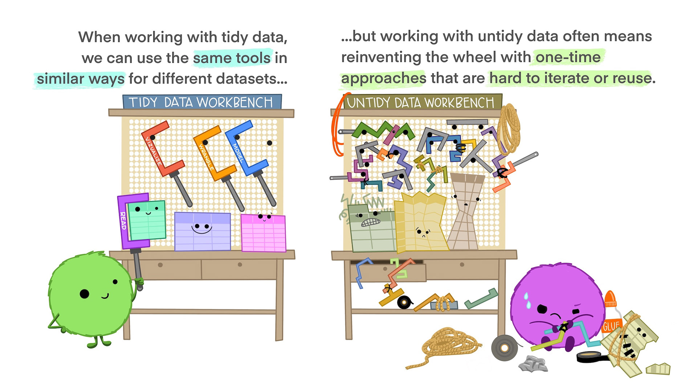
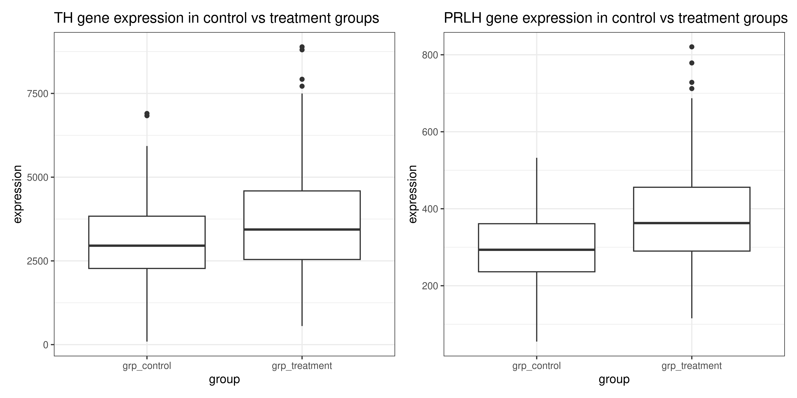

# tidyverse package contains most of what we need
library(tidyverse)
# let's also load patchwork to put plots together
library(patchwork)4 Session 4: Putting it all together
In this session we will combine all the skills we have learned so far to perform a complete analysis of a small dataset.
TipLearning Objectives
At the end of this session, learners should be able to:
Explain the concept and purpose of ‘tidy’ data
Understand how pivot, separate and join functions can be used to reshape and combine entire data frames
Describe the key steps in data analysis
Perform basic data analyses in R
4.1 Introduction
For our analysis, we will use the dosage and genes data frames, which contain information about the mice treated with mousezempic and their gene expression levels, respectively.
The first thing we need to do is load the packages we’ll need for today:
And read in the two datasets:
# read in dosage data
dosage <- read_csv("data/mousezempic_dosage_data.csv")Rows: 344 Columns: 9
── Column specification ────────────────────────────────────────────────────────
Delimiter: ","
chr (4): mouse_strain, cage_number, replicate, sex
dbl (5): weight_lost_g, drug_dose_g, tail_length_mm, initial_weight_g, id_num
ℹ Use `spec()` to retrieve the full column specification for this data.
ℹ Specify the column types or set `show_col_types = FALSE` to quiet this message.# read in expression data
genes <- read_tsv("data/mousezempic_expression_data.tsv")Rows: 343 Columns: 11
── Column specification ────────────────────────────────────────────────────────
Delimiter: "\t"
chr (1): group
dbl (10): Th_rep1, Th_rep2, Th_rep3, Prlh_rep1, Prlh_rep2, Prlh_rep3, Hprt1_...
ℹ Use `spec()` to retrieve the full column specification for this data.
ℹ Specify the column types or set `show_col_types = FALSE` to quiet this message.
NoteHow do we read in data again?
Note that we used read_csv() for the mouse dosage data and read_tsv() for the expression data. We chose these functions to match the file extensions of the two datasets, as described when we first learned about reading in data in session 1 (see Section 1.8.2).
Before we go further, let’s take a moment to explore the genes dataset, as it’s new in this session.
genes# A tibble: 343 × 11
group Th_rep1 Th_rep2 Th_rep3 Prlh_rep1 Prlh_rep2 Prlh_rep3 Hprt1_rep1
<chr> <dbl> <dbl> <dbl> <dbl> <dbl> <dbl> <dbl>
1 grp_treatme… 3239. 5964. 4123. 225. 359. 314. 858.
2 grp_treatme… 2665. 4867. 4240. 253. 460. 358. 709.
3 grp_treatme… 1536. 2501. 2054. 367. 552. 448. 975.
4 grp_treatme… 2732. 4800. 3981. 258. 411. 339. 725.
5 grp_treatme… 2384. 3460. 3115. 347. 651. 491. 896.
6 grp_treatme… 2972. 4880. 4028. 303. 456. 377. 865.
7 grp_treatme… 1936. 3666. 2964. 302. 441. 355. 625.
8 grp_treatme… 2801. 4977. 3795. 246. 424. 321. 856.
9 grp_treatme… 3239. 5198. 3930. 385. 654. 508. 623.
10 grp_treatme… 2665. 3820. 2958. 230. 391. 301. 740.
# ℹ 333 more rows
# ℹ 3 more variables: Hprt1_rep2 <dbl>, Hprt1_rep3 <dbl>, id_num <dbl>This data frame contains expression levels of two genes (TH and PRLH) suspected to be upregulated in mice taking mousezempic, as well as one housekeeping gene (HPRT1), all measured in triplicate. Each mouse has a unique ID number (id_num column), which matches with those in the dosage dataset, but there are also additional control mice, who have not received mousezempic (as described in the group column).
4.1.1 Today’s research questions
In today’s session, we will use the dosage and genes datasets to explore the following questions:
- Does the amount of weight lost by mice increase as dosage of mousezempic increases? Is this relationship affected by the mouse strain or sex?
- How does mousezempic affect the expression of the TH and PRLH genes? Is the expression of either of these genes correlated with the amount of weight mice lose?
Of course, there are countless questions we could ask of our data! In the interest of time, we will stick to these two key analyses but various others are explored in the practice questions at the end of this session’s notes.
4.2 Tidy data
In order to answer the research questions outlined above (or any others for that matter), we need to ensure that our data is “tidy”.
This is because the tidyverse packages we are using revolve around the concept of “tidy data”, which is a specific way of organising data into a table so that it is easy to work with. Tidy data is roughly defined as tabular data that contains:
- Individual variables in columns
- Individual observations in rows
- One data value in each cell
In other words, each column in our datasets should represent a particular measurement (like expression of the TH gene or the sex of the mice), and each row should contain all of the measurements available for a particular mouse.
NoteWhy is tidy data easy to work with?
This cartoon from Allison Horst sums it up well: 
Although tidy data is the easiest to work with, it’s often necessary to alter the format of your data for plotting or table displays. It’s a good idea to keep your core data in a tidy format and treating plot or table outputs as representations of that tidy data.
NoteData wrangling?
Most data you encounter will not be tidy, so the first part of data analysis is usually called “data wrangling” or “data cleaning” and involves tidying up your data (by “wrangling” it into shape) so it is easier to use for downstream analysis. In this session, we will practice data wrangling by tidying up the genes data frame.
4.3 Reshaping and combining data (to make it tidy)
In session 2, we learned a range of functions that work on either the rows or columns of our data: filter(), select(), mutate() and summarise(). By cleverly combining these functions you can answer a lot of different questions about your data, but sometimes you may need to reshape or even combine different datasets to get the right rows and columns. In this section, we will cover how the pivot, separate and join families of functions can be used to help us get our data in the right (tidy!) format to answer the research questions outlined above.
4.3.1 Reshaping data with pivot functions
Pivoting is a way to change the shape of your data:
Pivoting longer reshapes the data to transfer data stored in columns into rows, resulting in more rows and fewer columns.
Pivoting wider is the reverse, moving data from rows into columns.

As shown in the figure above, we use the pivot_longer() function to pivot data from wide to long format, and the pivot_wider() function to pivot data from long to wide format.
4.3.1.1 Pivot wider
A common use case for pivot_wider() is to make a contingency table, which shows the number of observations for each combination of two variables. This is often easier to read than the same information in long format.
For example, before we can address our first research question of whether the relationship between weight lost and drug dosage is affected by mouse strain or sex, we probably want to check that we have sufficient n for each mouse strain/sex combination. We can achieve this in a long format using summarise() as we learned in session 2:
dosage %>%
summarise(n_mice = n(), .by = c(mouse_strain, sex))# A tibble: 8 × 3
mouse_strain sex n_mice
<chr> <chr> <int>
1 CD-1 male 73
2 CD-1 female 73
3 CD-1 <NA> 6
4 Black 6 female 58
5 Black 6 male 61
6 Black 6 <NA> 5
7 BALB C female 34
8 BALB C male 34This summarises by each combination of mouse_strain and sex, with the n() function giving the count of data belonging to that combination.
To get a contingency table, we want the rows to represent one categorical variable (in this case sex) and the columns to represent another categorical variable (in this case mouse_strain), with the values in the cells being the counts (coming from the n_mice column). In doing so, our table will become wider, because we are adding additional columns. So, we can use the pivot_wider() function to create our contingency table.
pivot_wider() requires two pieces of information:
names_from, which is the column that the new columns will come fromvalues_from, which is the column that the values of the cells will come from
In this case, our names_from will be mouse_strain, and values_from will be n_mice.
dosage %>%
summarise(n_mice = n(), .by = c(mouse_strain, sex)) %>%
pivot_wider(names_from = mouse_strain, values_from = n_mice)# A tibble: 3 × 4
sex `CD-1` `Black 6` `BALB C`
<chr> <int> <int> <int>
1 male 73 61 34
2 female 73 58 34
3 <NA> 6 5 NAThis has transformed our data into a contingency table, with NA used to indicate where no data corresponding data exists for the specific sex and mouse_strain combination. It allows us to see that we have a decent number of mice for each strain/sex, giving us confidence that we can address whether or not these variables affect the relationship between drug dosage and weight loss.
4.3.1.2 Pivot longer
Although wide format data is easy to read, it is difficult to use tidyverse functions on because of how variables are stored in column names rather than in columns of their own. For example, in the contingency table we created above, the different strains of the mice are now in the names of the columns. Another example of this is in our new genes dataset, where the gene names and replicates are both encoded as column names:
genes# A tibble: 343 × 11
group Th_rep1 Th_rep2 Th_rep3 Prlh_rep1 Prlh_rep2 Prlh_rep3 Hprt1_rep1
<chr> <dbl> <dbl> <dbl> <dbl> <dbl> <dbl> <dbl>
1 grp_treatme… 3239. 5964. 4123. 225. 359. 314. 858.
2 grp_treatme… 2665. 4867. 4240. 253. 460. 358. 709.
3 grp_treatme… 1536. 2501. 2054. 367. 552. 448. 975.
4 grp_treatme… 2732. 4800. 3981. 258. 411. 339. 725.
5 grp_treatme… 2384. 3460. 3115. 347. 651. 491. 896.
6 grp_treatme… 2972. 4880. 4028. 303. 456. 377. 865.
7 grp_treatme… 1936. 3666. 2964. 302. 441. 355. 625.
8 grp_treatme… 2801. 4977. 3795. 246. 424. 321. 856.
9 grp_treatme… 3239. 5198. 3930. 385. 654. 508. 623.
10 grp_treatme… 2665. 3820. 2958. 230. 391. 301. 740.
# ℹ 333 more rows
# ℹ 3 more variables: Hprt1_rep2 <dbl>, Hprt1_rep3 <dbl>, id_num <dbl>This can be pretty tricky to work with— we’d have to type out all of the Th_rep1 Th_rep2 Th_rep3 columns every time we want to do something with the TH gene, and if we ever wanted to re-use the code for a different gene or a different number of replicates we’d need to change the column names accordingly. Instead, it would be better to have a column for gene name, and another column for the replicate so that we can write code that will cope with any number of different genes and replicates.
To achieve this, we can use the pivot_longer() function, which will create a pair of new columns from the original column name and the value of the corresponding cell. pivot_longer() requires three different arguments:
cols: the columns to pivot from. You can use selection helpers likecontains()orstarts_with()to easily select multiple columns at once.names_to: the name of a new column that will contain the original column names.values_to: the name of a new column that will contain the values from the original columns.
In our case, here’s what the code would look like:
# save the long format data as a variable so we can use it later
genes_long <- genes %>%
pivot_longer(
cols = contains("_rep"),
names_to = "measurement",
values_to = "expression"
)
genes_long# A tibble: 3,087 × 4
group id_num measurement expression
<chr> <dbl> <chr> <dbl>
1 grp_treatment 1 Th_rep1 3239.
2 grp_treatment 1 Th_rep2 5964.
3 grp_treatment 1 Th_rep3 4123.
4 grp_treatment 1 Prlh_rep1 225.
5 grp_treatment 1 Prlh_rep2 359.
6 grp_treatment 1 Prlh_rep3 314.
7 grp_treatment 1 Hprt1_rep1 858.
8 grp_treatment 1 Hprt1_rep2 1292.
9 grp_treatment 1 Hprt1_rep3 988.
10 grp_treatment 2 Th_rep1 2665.
# ℹ 3,077 more rowsTake a moment to try and understand the values provided to each argument, then check your answer below ⬇️
Solution
- For the
colsargument, we used the selection helpercontains("_rep")to select all columns containing the string"rep"(this saves us typing out all nine of the column names) - For the
names_toargument, we decided to call this new column ‘measurement’, as it contains both the gene name and replicate (so is a unique measurement of a particular gene in a particular replicate) - For the
values_toargument, we have called this new column ‘expression level’ as the numbers represent the gene expression in each of the different measurements
NotePerplexed by pivoting?
Pivoting can be a bit tricky to get your head around! Often when you’re doing analysis, you’ll run into the problem of knowing that you need to pivot, but not knowing exactly what arguments to use. In these cases, it can be helpful to look at examples online, like those in the R for Data Science book, ask an AI assistant or just try things until it works!
ImportantPractice exercises
Try these practice questions to test your understanding
1. What does the following code do?
dosage %>%
summarise(
med_tail = median(tail_length_mm, na.rm = TRUE),
.by = c(mouse_strain, sex)) %>%
pivot_wider(names_from = sex, values_from = med_tail)✗Pivots data into a wide format where there is a column for each sex.
✔Calculates the median tail length for each unique combination of mouse_strain and sex in the dosage data frame, then pivots into a wide format where there is a column for each sex.
✗Calculates the median tail length for each unique combination of mouse_strain and sex in the dosage data frame, then pivots into a wide format where there is a column for each mouse strain.
✗It just gives an error
2. I have run the following code to create a new column in the dosage data frame that gives the weight of the mice at the end of the experiment.
dosage %>%
# add a column for the weight at the end of the experiment
mutate(final_weight_g = initial_weight_g - weight_lost_g) %>%
# select the relevant columns only
select(id_num, initial_weight_g, final_weight_g)# A tibble: 344 × 3
id_num initial_weight_g final_weight_g
<dbl> <dbl> <dbl>
1 1 39.1 35.4
2 2 39.5 35.7
3 3 40.3 37.0
4 4 NA NA
5 5 36.7 33.2
6 6 39.3 35.6
7 7 38.9 35.3
8 8 39.2 34.5
9 9 34.1 30.6
10 10 42 37.8
# ℹ 334 more rowsWhich pivot function call would I use to take this data from a wide format (where there is a column for the final and initial weight) to a long format (where there is a row for each mouse and each weight measurement)?
✗pivot_longer(cols = c(initial_weight_g, final_weight_g), names_to = "weight", values_to = "timepoint")
✗pivot_longer(cols = c(id_num, final_weight_g), names_to = "timepoint", values_to = "initial_weight_g")
✗pivot_wider(names_from = initial_weight_g, values_from = final_weight_g)
✔pivot_longer(cols = c(initial_weight_g, final_weight_g), names_to = "timepoint", values_to = "weight")
Using the
dosagedata frame, write R code to:- Make a data frame that shows the number of mice of each strain, in each replicate.
- Pivot this data frame into a wide format to create a contingency table.
- Pivot the wide data frame from (b) back into a long format.
Solutions
1. The code first calculates the median tail length for each unique combination of mouse_strain and sex in the dosage data frame, then pivots the data into a wide format where there is a column for each sex in the dataset (because of the argument names_from = sex )
2. The correct pivot function call to take the data from a wide format to a long format is pivot_longer(cols = c(initial_weight_g, final_weight_g), names_to = "timepoint", values_to = "weight"). This code tells R to pivot the initial_weight_g and final_weight_g columns into a long format, where there is a row for each mouse and each weight measurement. The names_to argument specifies to make a column called ‘timepoint’ that tells us whether the measurement is initial or final, and the values_to argument specifies the name of the new column that will contain these measurements.
3. Here’s how you could write R code to achieve the tasks:
a. `dosage %>% summarise(n_mice = n(), .by = c(mouse_strain, replicate))`
b. `dosage %>% summarise(n_mice = n(), .by = c(mouse_strain, replicate)) %>% pivot_wider(names_from = replicate, values_from = n_mice)`
c. `dosage %>% summarise(n_mice = n(), .by = c(mouse_strain, replicate)) %>% pivot_wider(names_from = replicate, values_from = n_mice) %>% pivot_longer(cols = starts_with("rep"), names_to = "replicate", values_to = "n_mice")`4.3.2 Separating data in a column
Now that we’ve pivoted it into a long format, our genes data certainly looks a lot better! But, it’s not quite tidy yet; recall that our for data to be tidy, each column should contain only one variable. but our measurement column actually contains two pieces of information: the gene being measured and the replicate number, which are separated by an underscore. In order to make our data tidy, we can use the separate() function to split these into columns of their own.
To use the separate function, we need to give it three arguments:
- The name of the column that needs to be separated (in this case,
measurement) into, which is a vector of the new column names that the data will be placed intosep, which is the character that separates the two pieces of data
genes_tidy <- genes_long %>%
separate(
measurement,
into = c("gene", "replicate"),
sep = "_")We can now see that the gene name and replicate are contained within their own columns, officially making the data tidy!
genes_tidy# A tibble: 3,087 × 5
group id_num gene replicate expression
<chr> <dbl> <chr> <chr> <dbl>
1 grp_treatment 1 Th rep1 3239.
2 grp_treatment 1 Th rep2 5964.
3 grp_treatment 1 Th rep3 4123.
4 grp_treatment 1 Prlh rep1 225.
5 grp_treatment 1 Prlh rep2 359.
6 grp_treatment 1 Prlh rep3 314.
7 grp_treatment 1 Hprt1 rep1 858.
8 grp_treatment 1 Hprt1 rep2 1292.
9 grp_treatment 1 Hprt1 rep3 988.
10 grp_treatment 2 Th rep1 2665.
# ℹ 3,077 more rows4.3.3 Combining data with join functions
To address our second research question, we need to look at the relationship between gene expression data (in the genes data frame) and mouse strain (in the dosage data frame). But how can we achieve this when the information is contained across two separate data frames? So long as we have some way of connecting the observations in each data frame (i.e. a shared column), we can use the join family of functions to combine them.
There are many different types of join functions that you can use, but broadly they will either:
- Add new variables from one data frame to another
- Filter observations in one data frame based on whether or not they match observations in another data frame.
- Do both of these things at the same time
Probably the most commonly used is the left_join() function. You need to provide it with two pieces of information:
The two data frames you want to join
The name of a column (or columns) to join by
The reason it’s called a left-join is because it retains all rows from the left data frame while adding on columns from the right data frame only when the column you’re joining by matches.
For example, in the following cartoon, where we are joining by column A:

We can see that:
- A new column, D has been added from the right data frame
- All of the observations from the left data frame are present in the result
- The first row of the result contains an
NAin the D column, because in the right data frame that the D column comes from, there is no matching observation ‘a’ - The last row from the right data frame is missing from the result, because it has no matching value of ‘d’ in the left data frame
WarningBeware multiple matches!
If the values from the left data frame match to multiple rows of the column in the right data frame, the left_join() will duplicate the data from the left data frame for each match to the right. This can cause issues with downstream summarisation if not carefully considered.
Using this knowledge, let’s try joining our dosage and genes_tidy data frames based on their shared column, id_num (an ID number uniquely assigned to each mouse):
# let's save the result of this as a variable
combined_data <- left_join(
genes_tidy, # the left data frame
dosage, # the right data frame
by = "id_num") # name of the column to join by
combined_data# A tibble: 3,087 × 13
group id_num gene replicate.x expression mouse_strain cage_number
<chr> <dbl> <chr> <chr> <dbl> <chr> <chr>
1 grp_treatment 1 Th rep1 3239. CD-1 1A
2 grp_treatment 1 Th rep2 5964. CD-1 1A
3 grp_treatment 1 Th rep3 4123. CD-1 1A
4 grp_treatment 1 Prlh rep1 225. CD-1 1A
5 grp_treatment 1 Prlh rep2 359. CD-1 1A
6 grp_treatment 1 Prlh rep3 314. CD-1 1A
7 grp_treatment 1 Hprt1 rep1 858. CD-1 1A
8 grp_treatment 1 Hprt1 rep2 1292. CD-1 1A
9 grp_treatment 1 Hprt1 rep3 988. CD-1 1A
10 grp_treatment 2 Th rep1 2665. CD-1 1A
# ℹ 3,077 more rows
# ℹ 6 more variables: weight_lost_g <dbl>, replicate.y <chr>, sex <chr>,
# drug_dose_g <dbl>, tail_length_mm <dbl>, initial_weight_g <dbl>We now have the gene expression information and the dosage/metadata for each mouse all together in a single data frame. Notice how all of the 3,087 rows in the genes_tidy data frame are present in the combined_data, and the relevant information from the dosage data frame has been joined where available.
NoteTwo replicate columns?
One other thing you might have noticed is that there are now two replicate columns: replicate.x and replicate.y. This is because both genes_tidy and dosage each contained their own replicate column, but we only told left_join() to match up our data by id_num. Since you can’t have two columns with the same name, R has added the .x and .y to differentiate them. If you want R to use more informative names than just .x and .y , you can use the suffix argument:
left_join(
genes_tidy, # the left data frame
dosage, # the right data frame
by = "id_num", # name of the column to join by
suffix = c("_genes", "_dosage"))# A tibble: 3,087 × 13
group id_num gene replicate_genes expression mouse_strain cage_number
<chr> <dbl> <chr> <chr> <dbl> <chr> <chr>
1 grp_treatme… 1 Th rep1 3239. CD-1 1A
2 grp_treatme… 1 Th rep2 5964. CD-1 1A
3 grp_treatme… 1 Th rep3 4123. CD-1 1A
4 grp_treatme… 1 Prlh rep1 225. CD-1 1A
5 grp_treatme… 1 Prlh rep2 359. CD-1 1A
6 grp_treatme… 1 Prlh rep3 314. CD-1 1A
7 grp_treatme… 1 Hprt1 rep1 858. CD-1 1A
8 grp_treatme… 1 Hprt1 rep2 1292. CD-1 1A
9 grp_treatme… 1 Hprt1 rep3 988. CD-1 1A
10 grp_treatme… 2 Th rep1 2665. CD-1 1A
# ℹ 3,077 more rows
# ℹ 6 more variables: weight_lost_g <dbl>, replicate_dosage <chr>, sex <chr>,
# drug_dose_g <dbl>, tail_length_mm <dbl>, initial_weight_g <dbl>It is now clearer which original dataset each replicate column comes from.
4.3.3.1 Joining with mismatched column names
Sometimes, the column containing the matching information you want to join over will have different names in different data frames. For example what might be called “id_num” in one data frame could be called “mouse_id” in another data frame. In this case, the by argument of left_join() can be formatted using the join_by(name1 == name2) helper function to specify which column in the left data frame matches which column on the right.
As an example, we’ll rename the id_num column in the dosage data frame to mouse_id and repeat the join to genes_tidy:
# rename id_num to mouse_id
renamed_dosage <- dosage %>%
# we can use the rename() function to rename a column
rename(mouse_id = id_num)
# now perform the left join
left_join(
genes_tidy, # left data frame
renamed_dosage, # right data frame
# join by the id_num column in genes_tidy, which is equivalent to the mouse_id column in renamed_dosage
by = join_by(id_num == mouse_id)) # A tibble: 3,087 × 13
group id_num gene replicate.x expression mouse_strain cage_number
<chr> <dbl> <chr> <chr> <dbl> <chr> <chr>
1 grp_treatment 1 Th rep1 3239. CD-1 1A
2 grp_treatment 1 Th rep2 5964. CD-1 1A
3 grp_treatment 1 Th rep3 4123. CD-1 1A
4 grp_treatment 1 Prlh rep1 225. CD-1 1A
5 grp_treatment 1 Prlh rep2 359. CD-1 1A
6 grp_treatment 1 Prlh rep3 314. CD-1 1A
7 grp_treatment 1 Hprt1 rep1 858. CD-1 1A
8 grp_treatment 1 Hprt1 rep2 1292. CD-1 1A
9 grp_treatment 1 Hprt1 rep3 988. CD-1 1A
10 grp_treatment 2 Th rep1 2665. CD-1 1A
# ℹ 3,077 more rows
# ℹ 6 more variables: weight_lost_g <dbl>, replicate.y <chr>, sex <chr>,
# drug_dose_g <dbl>, tail_length_mm <dbl>, initial_weight_g <dbl>Notice how the column name from the left data frame (in this case, id_num) is retained in the joined result.
Note
Note that an older syntax exists for the by argument that would look like by = c("mouse_id" = "id_num"). You might encounter this in older books/posts/examples online, or when using AI assistants like ChatGPT, but we recommend you stick to the join_by() syntax instead, as it’s easier to understand.
ImportantPractice exercises
Try these practice questions to test your understanding
1. Which of the following is NOT a valid way to join the dosage data frame with the genes data frame based on the id_num column?
✗dosage %>% left_join(genes, by = "id_num")
✗left_join(dosage, genes, by = "id_num")
✔dosage %>% left_join(genes, .by = "id_num")
✗dosage %>% left_join(genes, by = ("id_num" = "id_num"))
- Let’s say I have two data frames,
df1anddf2, that I want to join based a shared ‘key’ column, that is called ‘key’ indf1and ‘item_key’ indf2. Write R code to join these two data frames using theleft_join()function.
Solutions
1. The line of code that is NOT a valid way to join the dosage data frame with the genes data frame based on the id_num column is dosage %>% left_join(genes, .by = "id_num"). This line of code is incorrect because the .by argument is not used in the left_join() function (this can be confusing! it’s .by when grouping by by when joining). The other options are valid ways to join the two data frames based on the id_num column: remember that we don’t have to use pipes to join data frames, we can use the left_join() function directly, and we can use a named vector to specify the columns to join on (although here it’s a bit redundant as the columns have the same name).
2. To join the two data frames you could use df1 %>% left_join(df2, by = c("key" = "item_key")) (with pipe) or left_join(df1, df2, by = c("key" = "item_key")) (without pipe).
4.4 The process of data analysis
With all that data wrangling out of the way, we can finally move on to doing some analysis to answer our research questions! But wait— how do you actually do data analysis? Where should you start?
Well, the creators of the tidyverse packages we use in this course have proposed the following ‘process of data science’:

In fact, we’ve already done the first two steps: reading in our data and tidying it up! The main portion of the analysis however is depicted as a cycle: transforming your data with the dplyr functions we learned in Chapter 2, visualising it with the ggplot2 functions we learned in Chapter 3, modelling it (with statistics, which we don’t cover in this course as they’re quite field-specific) and repeating. This process of iterating over many different research/analysis questions to develop a deeper understanding of your data allows you to really explore every aspect. Finally, you need to be able to clearly communicate the results of your analysis and interpret them in the biological context!
As we go through the research questions in the rest of this session, keep these steps in mind and try to think about how you could communicate the results.
4.5 Question 1: The relationship between dosage and weight loss
Let’s start by tackling the first part of our first research question: Does the amount of weight lost by mice increase as dosage of mousezempic increases?
Luckily, our dosage data was pretty tidy already so we didn’t have to do much cleaning. To begin our analysis process, let’s try investigating the relationship between these variables with visualisation. As both the dosage and weight loss variables are continuous, we can represent them on a scatterplot using geom_point()
ggplot(dosage, aes(x = drug_dose_g, y = weight_lost_g)) +
geom_point()
We can clearly see a positive linear relationship between drug dosage and weight lost.
However, this plot certainly isn’t publication ready! Practice the R skills you have learned throughout the course so far and try to improve the look of the plot by working through the exercises below ⬇️
ImportantPractice exercise: changing the x axis
For starters, it would probably make more sense to display the drug doses in milligrams rather than in grams, given that the values are so small. Take a moment to think about how you might achieve this using the dplyr functions we learned in session 2, and then check your answer below.
Solution
To convert g to mg we need to multiply by 1000. So, we need some kind of function that allows us to take the existing drug_dose_g column and multiply it by 1000 to create a new column that we can use for our plotting.
1. Use the mutate() function to create a new column in the dosage data frame called (for example) drug_dose_mg
2. Either save the modified dosage data frame as a variable in R, or pipe it directly into the ggplot function call
3. Make the ggplot as before
Learning how to break a problem down into simple steps is a crucial skill to learn for data analysis! Even if there are some steps that you don’t immediately know how to solve with code, it gives you a good starting point for your googling or to ask ChatGPT.
Now, try to convert these steps into code and create a plot where the x axis displays the drug dose in mg, like this one:
Warning: Removed 2 rows containing missing values or values outside the scale range
(`geom_point()`).Solution
Following the steps outlined above, here are two example code chunks that will make the correct plot. There are of course many more ways to approach the problem, so it’s ok if your solution doesn’t match perfectly!
This first solution saves the modified dosage data as a new data frame, which could be useful if you want to use the drug_dose_mg column in other plots or calculations:
# step two: save the modified version of dosage as its own
dosage_mg <- dosage %>%
# step one: use mutate to create drug_dose_mg column
mutate(drug_dose_mg = drug_dose_g * 1000)
# step three: plot same as before
ggplot(dosage_mg, aes(x = drug_dose_mg, y = weight_lost_g)) +
geom_point()The second one instead pipes this data frame directly from the mutate() function call straight into the ggplot() function. This approach is convenient when the data manipulation you’re doing (in this case adding the drug_dose_mg column) is only for a specific plot, so you don’t clutter up your environment panel:
dosage %>%
# step one: use mutate to create drug_dose_mg column
mutate(drug_dose_mg = drug_dose_g * 1000) %>%
# step two: pipe directly into the ggplot() function
# note that because the pipe passes our modified dosage data in as the first argument,
# we don't need to specify the data frame we are plotting, just the aes()
ggplot(aes(x = drug_dose_mg, y = weight_lost_g)) +
# step three: plot same as before
geom_point()Now our x axis is much easier to read!
Still, there are a few things we could do to make our plot look a bit better. In the next set of practice problems, we will use our ggplot2 knowledge to improve the plot visually:
ImportantPractice exercise: making visual improvements
Take a moment to look at the plot and think of what you could change to make it more informative and visually appealing. Of course this is subjective, but some suggestions are provided below.
Solution
1. The plot could do with some nicely formatted labels on the x and y axes, as well as a title.
2. Some of the points on the plot are overlapping, so it could be helpful to change the points from filled circles to unfilled circles so they don’t all just merge into a blob.
3. This is a matter of personal taste, but I think the default ggplot2 grey background is kind of basic so I always change it 😝
Here’s my plot. Click below to see the R code that made it:
Show the R code
# see the previous practice q for the explanation of this
# dplyr code to create the mg column
dosage %>%
mutate(drug_dose_mg = drug_dose_g * 1000) %>%
# create the plot
ggplot(aes(x = drug_dose_mg, y = weight_lost_g)) +
# change the points to unfilled circles
# note that we don't need to put it in aes() because
# it isn't tied to a particular variable
# also increasing the stroke (width of the circle line) to 0.75
# so the points stand out more
geom_point(shape = 1, stroke = 0.75) +
# add axis labels and title
labs(title = "Association between drug dosage and weight lost",
x = "Drug dosage (mg)",
y = "Weight lost (g)") +
# change the theme
theme_minimal()
4.5.1 The effect of strain and sex
The final part of the research question was to investigate whether mouse strain or sex has any effect on this relationship. Above, we learned how to use the summarise() and pivot_wider() functions to create a contingency table that counts up how many mice fall into each of the mouse strain/sex combinations. This is an important first step for the analysis, as it allows us to double check that there isn’t a category with so few mice that would prevent us from drawing reliable conclusions.
dosage %>%
summarise(n_mice = n(), .by = c(mouse_strain, sex)) %>%
pivot_wider(names_from = mouse_strain, values_from = n_mice)# A tibble: 3 × 4
sex `CD-1` `Black 6` `BALB C`
<chr> <int> <int> <int>
1 male 73 61 34
2 female 73 58 34
3 <NA> 6 5 NAGiven that there are >30 mice in each category, we can proceed with the analysis.
ImportantPractice exercise: adding in extra information
Now, let’s try adding the mouse strain and sex information to the scatterplot we created above. Try to think about what aesthetics would be good to use to show those two variables.
Solution
# see the previous practice q for the explanation of this
# dplyr code to create the mg column
dosage %>%
mutate(drug_dose_mg = drug_dose_g * 1000) %>%
# create the plot
ggplot(aes(x = drug_dose_mg, y = weight_lost_g, colour = mouse_strain, shape = sex)) +
geom_point() +
# add axis labels and title
labs(title = "Association between drug dosage and weight lost",
x = "Drug dosage (mg)",
y = "Weight lost (g)",
# adding nicer labels to the legend
# you just use the aesthetic name
colour = "Mouse strain",
shape = "Sex") +
# change the theme
theme_minimal()Note that:
It’s up to you which aesthetics should represent each variable, but in this example the
colouraesthetic was chosen for the mouse strains because there are more strains than sexes, and it’s easier to distinguish between different colours than different shapesWe used the
labs()function to change the legend labels for our mouse strain and sex variables. It just gives a nice professional touch to the plot
Our plot reveals that Black 6 mice received higher drug dosages than the other mice, and also lost more weight. This shows us why it’s so important to explore the relationships between lots of different variables in large datasets. Imagine if we had just plotted the weight loss for mice of each strain:
ggplot(dosage, aes(x = mouse_strain, y = weight_lost_g)) +
geom_boxplot() +
theme_minimal()We might think that the drug is more effective on Black 6 mice, because they lost more weight, but our scatterplot above shows it’s more likely to be due to their higher dosage.
Always try to look at all the variables you have, because you never know what associations you might find!
4.6 Question 2: The effect of mousezempic on gene expression
Our second research question was about the effect of mousezempic on the expression of the TH and PRLH genes. To answer this question, we can use the genes_tidy dataset that we prepared in Section 4.3, by pivoting the genes dataset to be longer and separating the measurement column so each variable is contained within its own column.
Let’s take a look at the genes_tidy data to remind ourselves of the information it contains. You might like to use the View() function, or just type the name of the data like so:
genes_tidy# A tibble: 3,087 × 5
group id_num gene replicate expression
<chr> <dbl> <chr> <chr> <dbl>
1 grp_treatment 1 Th rep1 3239.
2 grp_treatment 1 Th rep2 5964.
3 grp_treatment 1 Th rep3 4123.
4 grp_treatment 1 Prlh rep1 225.
5 grp_treatment 1 Prlh rep2 359.
6 grp_treatment 1 Prlh rep3 314.
7 grp_treatment 1 Hprt1 rep1 858.
8 grp_treatment 1 Hprt1 rep2 1292.
9 grp_treatment 1 Hprt1 rep3 988.
10 grp_treatment 2 Th rep1 2665.
# ℹ 3,077 more rowsEach mouse has a unique id_num, and belongs to a group (either treatment or control). There are also gene expression measurements in triplicate for each of three different genes: the TH and PRLH genes we are interested in and HPRT1, a housekeeping gene.
4.6.1 Do the treatment and control groups differ?
To investigate differences in gene expression between the treatment an control groups, a good first step would be to make a plot. Boxplots, violin plots or beeswarm plots would be a good choice to visualise this type of data.
ImportantPractice exercise: plotting the relationship between mousezempic and gene expression
Take a moment to think about how you could achieve this, and check your answer below. As an additional exercise, how could you prevent the HPRT1 gene from being shown on your plot?
Solution
Since we want to plot the expression of two different genes, we have a couple of options.
Firstly, we could use a single ggplot() function call, and facet the plot by the gene. However, if we want to exlude the HPRT1 gene, we’ll have to first use the filter() function from dplyr to remove it from our data frame.
genes_tidy %>%
# remember that != is the test for inequality in R
# also note we use Hprt1 not HPRT1: needs to match
# the data frame exactly for filter() to work
filter(gene != "Hprt1") %>%
# we will pipe this filtered data into the ggplot
# because we are unlikely to want to re-use it
ggplot(aes(x = group, y = expression)) +
geom_boxplot() +
# to facet write ~ then the name of the column
# need scales = "free" because otherwise it will
# use the same scales for both genes, and the
# expression levels are quite different
facet_wrap(~ gene, scales = "free") +
theme_bw()
Another option would be to plot each of TH and PRLH separately, with two different ggplot() function calls and then combine them with patchwork (make sure this package is loaded!). To do this, we would also have to use the filter() function, this time to filter to just the rows that contain the gene we want to plot
# first plot: TH
th_plot <- genes_tidy %>%
# == tests for equality in R
filter(gene == "Th") %>%
ggplot(aes(x = group, y = expression)) +
geom_boxplot() +
# should add a title to remind us which one this is
labs(title = "TH gene expression in control vs treatment groups") +
theme_bw()
# second plot: PRLH
prlh_plot <- genes_tidy %>%
# == tests for equality in R
filter(gene == "Prlh") %>%
ggplot(aes(x = group, y = expression)) +
geom_boxplot() +
# should add a title to remind us which one this is
labs(
title = "PRLH gene expression in control vs treatment groups") +
theme_bw()
# combine them using patchwork + syntax
th_plot + prlh_plot
The first method with faceting requires less code, but the second method of making two separate plots that are combined with patchwork allows you to be more flexible with the layout and include extra plots in the figure if desired.
But either solution is perfectly valid, and allows us to see that the expression of the Th and Prlh genes is higher in the treatment group than in the control group.
R also provides a range of functions that we could use to formally test the relationship between these variables, although they are out of the scope of this course. A helpful guide on performing statistical tests in R can be found here.
4.6.2 An aside: string manipulation
Let’s now take a moment to improve the appearance of our plot from the exercise above:
In session three we learned how to change the x and y axis labels on our graph to be more informative, but how can we change the values on the axes themselves? Currently, we have ‘grp_control’ and ‘grp_treatment’, but to make the plot look more publication-ready, it would be nice if it could just say ‘Control’ and ‘Treatment’.
We can do this with the help of the stringr tidyverse package, which contains a set of functions to manipulate string (character) data in R. Being able to programatically manipulate strings is an essential tool for dealing with real-world data, particularly when you need to extract sample information from names or (as in our case) remove irrelevant characters that only take up space on plots.
Some useful functions for string manipulation include:
str_replace(string, pattern, replacement): replaces thepatternin thestringwith thereplacementstr_extract(string, pattern): extracts the part of thestringmatching thepatternstr_remove(string, pattern): removes the part of thestringmatching thepattern
The full list of functions can be found in the stringr package documentation.
NoteUsing stringr functions on a data frame
Remember from session 2 that when we use the pipe operator %>%, it passes whatever precedes it into the function after it as the first argument. This means that the functions we use within a chain of pipes on a data frame should (generally) have a data frame as their input, and return a data frame as their output.
But stringr functions operate on character vectors (their first argument is string, as shown above), so how can we use them on our data frames? The answer is to wrap it in the mutate() function from the dplyr package, which allows us to either edit an exisiting column or create a new one based on our string manipulation.
For example, let’s say we want to change the replicate column in our genes_tidy data frame to read ‘Replicate 1’, ‘Replicate 2’, etc instead of ‘rep1’, ‘rep2’. We would do this by using the str_replace() function inside the mutate() function like so:
genes_tidy %>%
mutate(replicate = str_replace(replicate, "rep", "Replicate "))# A tibble: 3,087 × 5
group id_num gene replicate expression
<chr> <dbl> <chr> <chr> <dbl>
1 grp_treatment 1 Th Replicate 1 3239.
2 grp_treatment 1 Th Replicate 2 5964.
3 grp_treatment 1 Th Replicate 3 4123.
4 grp_treatment 1 Prlh Replicate 1 225.
5 grp_treatment 1 Prlh Replicate 2 359.
6 grp_treatment 1 Prlh Replicate 3 314.
7 grp_treatment 1 Hprt1 Replicate 1 858.
8 grp_treatment 1 Hprt1 Replicate 2 1292.
9 grp_treatment 1 Hprt1 Replicate 3 988.
10 grp_treatment 2 Th Replicate 1 2665.
# ℹ 3,077 more rowsThis applies to lots of other functions, not just the ones from the stringr package— if you want to use a function that takes a vector as input on a column of a data frame, wrap it in the mutate() function first!
‘Patterns’ are what the stringr package will look for in your string. For example, in this case, our pattern could be grp_ because this is what we want to remove from the strings in our ‘group’ column. This is an example of a fixed pattern, where you specify exactly what string you want to find. There is also another way to write patterns, called regular expressions which allow you to, for example, remove everything before the first underscore or all numbers. These are extremely powerful, but can get a little confusing so you might like to get help from AI to write them.
ImportantCleaning up the text on our plot
Using the stringr package, remove the ‘grp_’ from the x axis labels, and then use ggplot2 functions to add other labels to the plot. Here’s an example of what this might look like:
Solution
The code that generates the plot above is:
genes_tidy %>%
# use str_remove function to remove 'grp_' from the
# beginning of the group column. need to wrap it in
# the mutate function because we are working on a
# column in a data frame not just on a vector
mutate(group = str_remove(group, "grp_")) %>%
filter(gene != "Hprt1") %>%
ggplot(aes(x = group, y = expression)) +
geom_boxplot() +
facet_wrap(~ gene, scales = "free") +
theme_bw() +
# add the other labels
labs(
title = "Effect of mousezempic on gene expression",
x = "Group",
y = "Expression (arbitrary units)")4.6.3 The relationship between gene expression and weight loss
The second part of research question 2 asked us to look at whether TH and/or PRLH expression is associated with the amount of weight lost by mice taking mousezempic. To do this, we will need to use the combined_data that we generated in Section 4.3.3, which is the result of joining the dosage and genes_tidy data frames.
ImportantPlotting the relationship between gene expression and weight loss
Use the combined_data data frame and your choice of ggplot2 functions to see whether there is a relationship between the expression of the TH & PRLH genes and weight lost by mice.
Solution
Since both variables are continuous, a scatterplot is a good choice to visualise their relationship. Here is some sample code:
# first plot: TH
th_plot <- combined_data %>%
# == tests for equality in R
filter(gene == "Th") %>%
ggplot(aes(x = expression, y = weight_lost_g)) +
geom_point() +
labs(
x = "TH gene expression (arbitrary units)",
y = "Weight loss (g)") +
theme_minimal()
# second plot: PRLH
prlh_plot <- combined_data %>%
filter(gene == "Prlh") %>%
ggplot(aes(x = expression, y = weight_lost_g)) +
geom_point() +
labs(
x = "PRLH gene expression (arbitrary units)",
y = "Weight loss (g)") +
theme_minimal()
# combine them using patchwork + syntax
th_plot + prlh_plotWarning: Removed 6 rows containing missing values or values outside the scale range
(`geom_point()`).
Removed 6 rows containing missing values or values outside the scale range
(`geom_point()`).We can se there is no association between the expression of TH and weight lost, and the same is true for PRLH expression and weight lost. This probably makes sense, as there are many complex regulatory pathways involved in hunger.
4.7 Summary
Today, we’ve tried to put together all of the skills we’ve learned in this R course and use them to address some sample data analysis questions. We’ve covered:
The concept of tidy data, that is stored in a consistent format so that we can easily analyse it with functions from the tidyverse
How to reshape data frames using the
pivot_wider(),pivot_longer()andseparate()functionsHow to merge data frames with common columns using the
left_join()functionThe ‘stringr’ package for string manipulation, and some of the basic ways we can use it to clean up character columns in our data frames
The overall process of data science, and how to apply it in practice to break down our research questions into a series of steps/function calls in R
Of course, a real data analysis will likely be much longer and more complex than the toy examples we have tackled today. However, we hope that it has provided you with a basic, yet versatile toolkit for transforming the messy data you will find in the wild into a neat, tidy format that you can use to explore your research questions and produce gorgeous data visualisations.